BOStrab
Ausfertigungsdatum: 11.12.1987
Vollzitat:
"Straßenbahn-Bau- und Betriebsordnung vom 11. Dezember 1987 (BGBl. I S. 2648), die zuletzt durch Artikel 1 der Verordnung vom 1. Oktober 2019 (BGBl. I S. 1410) geändert worden ist"
| Stand: | Zuletzt geändert durch Art. 1 V v. 1.10.2019 I 1410 |
| Erster Abschnitt | ||
| Allgemeines | ||
| § 1 | Anwendungsbereich und allgemeine Begriffsbestimmungen | |
| § 2 | Grundregeln | |
| § 3 | Allgemeine Anforderungen an den Bau der Betriebsanlagen und Fahrzeuge | |
| § 4 | Allgemeine Anforderungen an den Betrieb | |
| § 5 | Technische Aufsicht | |
| § 6 | Ausnahmen | |
| Zweiter Abschnitt | ||
| Betriebsleitung | ||
| § 7 | Unternehmer | |
| § 8 | Betriebsleiter | |
| § 9 | Bestätigung als Betriebsleiter | |
| Dritter Abschnitt | ||
| Betriebsbedienstete | ||
| § 10 | Allgemeine Anforderungen an Betriebsbedienstete | |
| § 11 | Besondere Anforderungen an Fahrbedienstete | |
| § 12 | Ausbildung und Prüfung der Fahrbediensteten | |
| § 13 | Verhalten während des Dienstes | |
| § 14 | Verhalten bei Krankheit | |
| Vierter Abschnitt | ||
| Betriebsanlagen | ||
| § 15 | Streckenführung | |
| § 16 | Bahnkörper | |
| § 17 | Oberbau | |
| § 18 | Umgrenzung des lichten Raumes | |
| § 19 | Sicherheitsräume | |
| § 20 | Bahnübergänge | |
| § 21 | Signalanlagen | |
| § 22 | Zugsicherungsanlagen | |
| § 23 | Nachrichtentechnische Anlagen | |
| § 24 | Energieversorgungsanlagen | |
| § 25 | Fahrleitungsanlagen | |
| § 26 | Rückleitungen | |
| § 27 | Beleuchtungsanlagen | |
| § 28 | Rohrleitungen | |
| § 29 | Brücken | |
| § 30 | Tunnel | |
| § 31 | Haltestellen | |
| § 32 | Aufzüge, Fahrtreppen und Fahrsteige | |
| Fünfter Abschnitt | ||
| Fahrzeuge | ||
| § 33 | Fahrzeuggestaltung | |
| § 34 | Fahrzeugmaße | |
| § 35 | Fahrwerke | |
| § 36 | Bremsen | |
| § 37 | Antrieb | |
| § 38 | Fahrsteuerung | |
| § 39 | Stromabnehmer und Schleifer | |
| § 40 | Signaleinrichtungen | |
| § 41 | Bahnräumer und Schienenräumer | |
| § 42 | Kupplungseinrichtungen | |
| § 43 | Türen für den Fahrgastwechsel | |
| § 44 | Fahrzeugführerplatz | |
| § 45 | Innenbeleuchtung, Heizung und Lüftung | |
| § 46 | Informationseinrichtungen | |
| § 47 | Beschriftungen und Sinnbilder | |
| § 48 | Ausrüstung für Notfälle | |
| Sechster Abschnitt | ||
| Betrieb | ||
| § 49 | Fahrordnung | |
| § 50 | Zulässige Geschwindigkeiten | |
| § 51 | Signale | |
| § 52 | Einsatz von Betriebsbediensteten | |
| § 53 | Besetzen der Züge mit Fahrbediensteten | |
| § 54 | Fahrbetrieb | |
| § 55 | Teilnahme am Straßenverkehr | |
| § 56 | Verhalten bei Mängeln an Zügen | |
| § 57 | Instandhaltung der Betriebsanlagen und Fahrzeuge | |
| § 58 | Benutzen und Betreten der Betriebsanlagen und Fahrzeuge | |
| § 59 | Betriebsgefährdende oder betriebsstörende Handlungen | |
| Siebenter Abschnitt | ||
| Verfahrensvorschriften | ||
| § 60 | Prüfung der Bauunterlagen für Betriebsanlagen | |
| § 61 | Aufsicht über den Bau von Betriebsanlagen und Fahrzeugen | |
| § 62 | Inbetriebnahmegenehmigung für Betriebsanlagen und Fahrzeuge | |
| Achter Abschnitt | ||
| Ordnungswidrigkeiten, Schluß- und Übergangsvorschriften | ||
| § 63 | Ordnungswidrigkeiten | |
| § 64 | Übergangsvorschrift | |
| § 65 | Inkrafttreten | |
| Anlage 1 | ||
| Kennzeichnung und Sicherung von Bahnübergängen | ||
| Anlage 2 | ||
| Grenzwerte für Bremsungen | ||
| Anlage 3 | ||
| Sinnbild zur Kenntlichmachung von Sitzplätzen für behinderte und andere sitzplatzbedürftige Personen | ||
| Anlage 4 | ||
| Signale | ||
| 1. | Breite im Höhenbereich | ||
| a) | bis 3,4 m über Schienenoberkante | 2,65 m, | |
| b) | oberhalb von 3,4 m über Schienenoberkante | 2,25 m; | |
| 2. | Höhe über Schienenoberkante bis Oberkante des abgezogenen Stromabnehmers | 4,0 m. |
| 1. | bei Vorbeifahrt an Bahnsteigen ohne Halt | 40 km/h, |
| 2. | beim Befahren von nicht verschlossenen Weichen gegen deren Spitze | 15 km/h. |
| 1. | Tunnel und Haltestellenbauwerke, sonstige Bahnbauwerke, ausgenommen Erdbauwerke | 10 Jahre, |
| 2. | Energieversorgungsanlagen | 4 Jahre, |
| 3. | Brücken | 6 Jahre, |
| 4. | Fahrleitungsanlagen | 5 Jahre, |
| 5. | Gleisanlagen | 5 Jahre, |
| 6. | Zugsicherungsanlagen | 5 Jahre, |
| 7. | Signalanlagen | 5 Jahre, |
| 8. | die Betriebssicherheit wesentlich beeinflussende maschinentechnische Anlagen | 5 Jahre, |
| 9. | Bahnübergänge | 2 Jahre, |
| 10. | Aufzüge, Fahrtreppen und Fahrsteige | 1 Jahr, |
| 11. | Fahrzeuge, nach Zurücklegung von 500.000 km, spätestens jedoch nach | 8 Jahren, |
| 12. | brandschutztechnische Anlagen | 1 Jahr. |
| 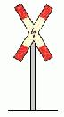 | Bild 1 Andreaskreuz Der Blitzpfeil in der Mitte des Andreaskreuzes zeigt an, daß die Strecke elektrische Fahrleitung hat |
| 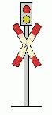 | Bild 2 Lichtzeichen Bei beengten Verhältnissen darf das Andreaskreuz neben oder über dem Lichtzeichen angebracht sein |
| 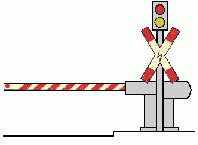 | Bild 3 Lichtzeichen mit Halbschranke Bei beengten Verhältnissen gelten die Angaben zu Bild 2 entsprechend. Die Halbschranke darf auch senkrecht gestreift sein. |
| a in m/s (hoch) 2 |
| |
| s in m |
| |
| v in km/h |
| |
| a | v(hoch)2 | |
| ||
| 3,6 (hoch) 2 x 2 s | ||
| Tabelle 1 | ||
| Grenzwerte bei Ausfall einer Bremse (§ 36 Absatz 3 und 7) | ||
| v km/h | a m/s (hoch) 2 | s m |
| 20 | 0,77 | 20 |
| 30 | 0,87 | 40 |
| 40 | 0,95 | 65 |
| 50 | 1,03 | 94 |
| 60 | 1,06 | 131 |
| 70 | 1,07 | 177 |
| 80 | 1,07 | 230 |
| 90 | 1,08 | 290 |
| 100 | 1,09 | 355 |
| Tabelle 2 | ||
| Grenzwerte bei Gefahrbremsungen (§ 36 Absatz 6 Nummer 3) | ||
| v km/h | a m/s (hoch) 2 | s m |
| 20 | 1,71 | 9 |
| 30 | 2,04 | 17 |
| 40 | 2,29 | 27 |
| 50 | 2,47 | 39 |
| 60 | 2,57 | 54 |
| 70 | 2,73 | 69 |
| Farbe des Sinnbildes und der Bildumrandung | schwarz |
| Farbe des Untergrundes | weiß |
| Übersicht | ||
| 1. | Hauptsignale | H |
| 2. | Vorankündigungssignale | V |
| 3. | Fahrsignale | F |
| 4. | Abfertigungssignale | A |
| 5. | Zugsignale | Z |
| 6. | Geschwindigkeitssignale | G |
| 7. | Schutzsignale | Sh |
| 8. | Rangiersignale | R |
| 9. | Schaltsignale | St |
| 10. | Weichensignale | W |
| 11. | Überwachungssignale für Bahnübergänge | Bü |
| 12. | Sondersignale | So |
| Bezeichnung | Signalbild | Bedeutung | Erläuterung |
| H 0 | Ein rotes Licht | Halt | |
| 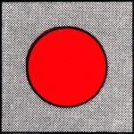 | |||
| H 1 | Ein grünes Licht | Fahrt | Signale H 1 und H 2 können auch in Verbindung mit Geschwindigkeitssignalen G 2 gegeben werden |
| 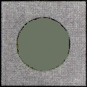 | |||
| H 2 | Ein grünes über einem gelbem Licht | Fahrt mit Geschwindigkeitsbeschränkung | |
| 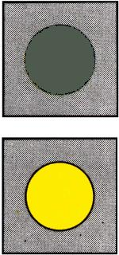 |
| Bezeichnung | Signalbild | Bedeutung | Erläuterung |
| V 0 | Zwei gelbe Lichter nach rechts steigend | Am folgenden Hauptsignal ist Halt zu erwarten | |
| 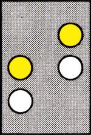 | |||
| V 1 | Zwei grüne Lichter nach rechts steigend | Am folgenden Hauptsignal ist Fahrt zu erwarten | |
| 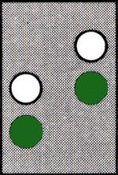 | |||
| V 2 | Ein grünes und ein gelbes Licht von links nach rechts stärker steigend | Am folgenden Hauptsignal ist Fahrt mit Geschwindigkeitsbeschränkung zu erwarten | |
| 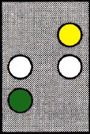 |
| Bezeichnung | Signalbild | Bedeutung | Erläuterung |
| F 0 | Ein weißer waagerechter Lichtbalken | Halt | |
| 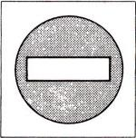 | |||
| F 1 | Ein weißer senkrechter Lichtbalken | Fahrt freigegeben nur geradeaus | |
| 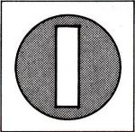 | |||
| F 2 | Ein weißer schräg nach rechts oben weisender Lichtbalken | Fahrt freigegeben nur nach rechts | |
| 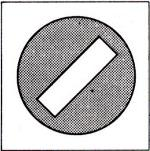 | |||
| F 3 | Ein weißer schräg nach links oben weisender Lichtbalken | Fahrt freigegeben nur nach links | |
| 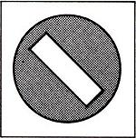 | |||
| F 4 | Ein weißer Lichtpunkt | Halt zu erwarten | |
| 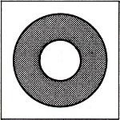 | |||
| F 5 | Ein weißes Lichtdreieck mit Spitze nach unten | Fahrt freigegeben unter Beachtung der Abbiegeregeln nach § 9 Straßenverkehrs-Ordnung | |
| 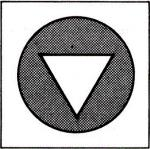 |
| Bezeichnung | Signalbild | Bedeutung | Erläuterung |
| A 1 | ein weiß- oder gelbleuchtendes T | Türen schließen | |
| 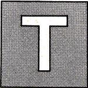 | |||
| A 2 a | Ein kurzes akustisches oder ein optisches oder ein akustisches und ein optisches Zeichen | Abfahren | |
| A 2 b | Ein weiß- oder grünleuchtender Ring | ||
| 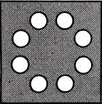 |
| Bezeichnung | Signalbild | Bedeutung | Erläuterung |
| Z 1 | An der Spitze eines Zuges drei weiße Lichter | Spitzensignal | Die Stirnleuchte des Spitzensignals kann die Linienbezeichnung enthalten |
| 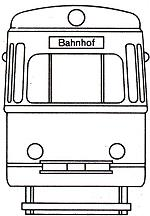 | |||
| Z 2 | Am Zugschluß zwei rote Lichter | Schlußsignal | |
| 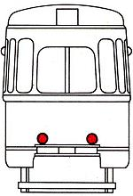 | |||
| Z 3 | Am Zugschluss zwei rote Lichter | Bremssignal | |
| 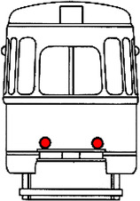 | |||
| Z 4 | Gelbe Blinklichter an einer der beiden Längsseiten | Fahrtrichtungssignal | |
| 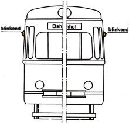 | |||
| Z 5 | Gelbe Blinklichter gleichzeitig an beiden Längsseiten | Warnblinksignal | Zeigt an, daß der Zug liegengeblieben ist |
| 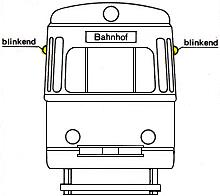 |
| Bezeichnung | Signalbild | Bedeutung | Erläuterung |
| G 1 a | Eine dreieckige, auf der Spitze stehende gelbe Tafel mit weißem Rand und schwarzer Kennziffer | Ankündigung der Geschwindigkeitsbeschränkung | Geschwindigkeitsbeschränkung ist jede Änderung der zulässigen Geschwindigkeit nach unten |
| 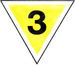 | |||
| Bei beschränktem Raum kann eine Dreieckspitze nach oben zeigen | |||
| G 1 b | Eine gelbleuchtende Kennziffer | ||
| 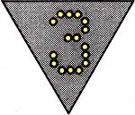 | |||
| G 2 a | Eine rechteckige gelbe Tafel mit weißem Rand und schwarzer Kennziffer | Beginn der Geschwindigkeitsbeschränkung | |
| 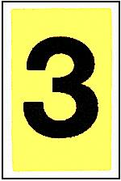 | |||
| G 2 b | eine weißleuchtende Kennziffer | ||
| 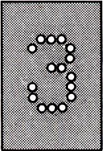 | |||
| G 3 | Eine rechteckige weiße Tafel mit schwarzem E | Ende der Geschwindigkeitsbeschränkung | Geschwindigkeitsbeschränkung ist jede Änderung der zulässigen Geschwindigkeit nach unten |
| 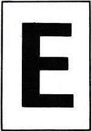 | |||
| G 4 | Eine rechteckige weiße Tafel mit schwarzem Rand und schwarzer Kennziffer | Beginn der Geschwindigkeitsbegrenzung | Zeigt Änderungen der zulässigen Geschwindigkeit nach oben an; kann auch anstelle von Signal G 3 verwendet werden |
| 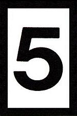 |
| Bezeichnung | Signalbild | Bedeutung | Erläuterung |
| Sh 1 | Eine quadratische gelbe Tafel mit waagerechtem grünen Streifen | Zwangshalt | Kennzeichnet Stellen, an denen bei Fahren auf Sicht an jedem Fall anzuhalten ist |
| Sh 2 | Eine rechteckige rote Tafel mit weißem Rand | Schutzhalt | Weiterfahrt ist unzulässig |
| 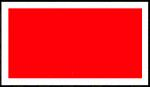 | |||
| Sh 3 a | Mindestens 3 kurze akustische Zeichen schnell hintereinander | Nothalt | Der Zug ist auf kürzestem Weg anzuhalten |
| 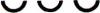 | |||
| Sh 3 b | Eine weiß-rot-weiße Fahne oder der Arm im Kreis bewegt | ||
| 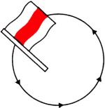 | |||
| Sh 3 c | Eine Laterne, möglichst rot abgeblendet, oder ein leuchtender Gegenstand im Kreis bewegt | ||
| 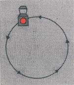 | |||
| Sh 3 d | Ein rotes Blinklicht oder mehrere rote Lichter untereinander | ||
| 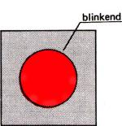 | |||
| Sh 4 | Eine rechteckige weiße Tafel mit schwarzem L | Läuten | Den örtlichen Gegebenheiten entsprechend sind akustische Warnsignale zu geben |
| 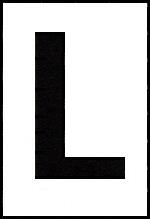 | |||
| Sh 5 | Ein mäßig langer Ton oder Läutezeichen | Achtung | Signal Sh 5 wird gegeben, um Personen zu warnen |
| Sh 6 | Ein rot-weißes Zeichen oder entsprechende Markierung im Gleisbereich | Grenzzeichen | Kennzeichnet die Grenze, bis zu der bei zusammenlaufenden Gleisen das Gleis besetzt werden darf |
| 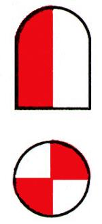 | |||
| Sh 7 | Eine rechteckige schwarze Tafel mit weißem H oder eine rechteckige weiße Tafel mit schwarzem H oder entsprechende Markierung im Gleisbereich | Haltetafel | Kennzeichnet die Stelle, an der die Spitze des Zuges halten soll |
| Bezeichnung | Signalbild | Bedeutung | Erläuterung |
| R 1 | Ein mäßig langer Ton und senkrechte Bewegungen des Armes, bei Dunkelheit mit einer weißen Laterne | Wegfahren | Rangierbewegung vom Signalgebenden weg |
| 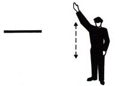 | |||
| R 2 | Zwei mäßig lange Töne und waagerechte langsame Bewegungen des Armes, bei Dunkelheit mit einer weißen Laterne | Herkommen | Rangierbewegung zum Signalgebenden hin |
| 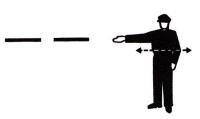 | |||
| R 3 | Drei kurze Töne und kreisförmige Bewegungen des Armes, bei Dunkelheit mit einer weißen Laterne | Rangierhalt | |
| 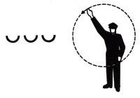 |
| Bezeichnung | Signalbild | Bedeutung | Erläuterung |
| St 1 | Eine quadratische blaue Tafel mit einem weißen S | Signalkontakt | Am Signal St 1 ist ein Signalkontakt zu betätigen |
| St 2 | Eine quadratische blaue Tafel mit einem weißen W | Weichenkontakt | Am Signal St 2 ist die Weichensteuerung zu betätigen |
| St 3 | Eine quadratische, auf der Spitze stehende blaue Tafel mit schwarzem und weißem Rand und einem zerlegten weißen U | Ausschalten | Vom Signal St 3 an muß der Fahrstrom ausgeschaltet sein |
| 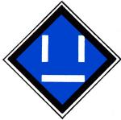 | |||
| St 4 | Eine quadratische, auf der Spitze stehende blaue Tafel mit schwarzem und weißem Rand und einem geschlossenen weißen U | Einschalten erlaubt | Vom Signal St 4 ab darf der Fahrstrom eingeschaltet werden |
| St 5 | Eine quadratische, auf der Spitze stehende blaue Tafel mi schwarzem und weißem Rand und einem waagerechten weißen Streifen | Stromabnehmer abziehen | Vom Signal St 5 ab muß der Stromabnehmer abgezogen sein |
| 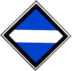 | |||
| St 6 | Eine quadratische, auf der Spitze stehende blaue Tafel mit schwarzem und weißem Rand und einem senkrechten weißen Streifen | Stromabnehmer anlegen | Vom Signal St 6 ab darf der Stromabnehmer wieder angelegt sein |
| St 7 | Eine quadratische blaue Tafel mit einem weißen T | Streckentrenner | Am Signal St 7 ist der Fahrstrom kurz abzuschalten |
| St 8 | Eine quadratische, auf der Spitze stehende blaue Tafel mit schwarzem und weißem Rand und einem auf der Spitze stehenden quadratischen weißen Rahmen mit innenliegendem weißen Quadrat | Halt für Fahrzeuge mit angelegtem Stromabnehmer | Fahrten über Signal St 8 hinaus sind für Fahrzeuge mit angelegtem Stromabnehmer unzulässig |
| Bezeichnung | Signalbild | Bedeutung | Erläuterung |
| W 1 | Ein weiß leuchtender Winkel mit Spitze nach oben | Weiche steht für Fahrt geradeaus mit höchstens 15 km/h | Kraftschlüssige Endlage der beweglichen Weichenteile (Weiche ohne Verschluß) |
| W 2 | Ein weiß leuchtender Winkel mit Spitze nach rechts | Weiche steht für Fahrt nach rechts mit höchstens 15 km/h | |
| W 3 | Ein weiß leuchtender Winkel mit Spitze nach links | Weiche steht für Fahrt nach links mit höchstens 15 km/h | |
| 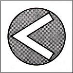 | |||
| W 11 | Ein weiß leuchtender Winkel mit Spitze nach oben und Basisbalken unten | Weiche steht für Fahrt geradeaus mit zulässiger Geschwindigkeit | Die beweglichen Teile der Weiche sind in der jeweiligen Endlage formschlüssig festgelegt (Weiche ist verschlossen) |
| 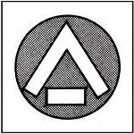 | |||
| W 12 | Ein weiß leuchtender Winkel mit Spitze nach rechts und Basisbalken links | Weiche steht für Fahrt nach rechts mit zulässiger Geschwindigkeit | |
| 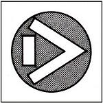 | |||
| W 13 | Ein weiß leuchtender Winkel mit Spitze nach links und Basisbalken rechts | Weiche steht für Fahrt nach links mit zulässiger Geschwindigkeit | |
| 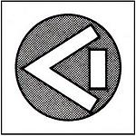 | |||
| W 14 | Ein weißer Winkel mit Spitze nach unten und Basisbalken oben auf einer quadratischen schwarzen Tafel | Weiche darf nicht aufgefahren werden | |
| Bezeichnung | Signalbild | Bedeutung | Erläuterung |
| Bü 0 | Ein schwarz-weiß schräg gestreiftes, rückstrahlendes Mastschild | Halt vor dem Bahnübergang; Weiterfahrt nur, wenn es die Verkehrslage erlaubt | Bü 0 zeigt an, daß die technische Sicherung des Bahnübergangs ausgefallen ist |
| 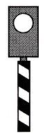 | |||
| Bü 1 | Ein weißes Blinklicht über einem schwarz-weiß schräg gestreiften, rückstrahlenden Mastschild | Der Bahnübergang darf befahren werden | Bü 1 zeigt an, daß die technische Sicherung des Bahnübergangs ordnungsgemäß arbeitet |
| 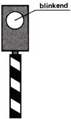 | |||
| Bü 2 | Eine rechteckige schwarze Tafel mit vier auf den Spitzen übereinander stehenden weißen Rauten | Ein Überwachungssignal ist zu erwarten | |
| Bezeichnung | Signalbild | Bedeutung | Erläuterung |
| So 1 | Eine quadratische weiße Tafel mit zwei schwarzen Punkten untereinander | Beginn einer Strecke mit Zugsicherung | Übergang vom Fahren auf Sicht zum Fahren auf Zugsicherung |
| 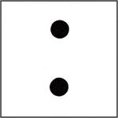 | |||
| So 2 | Eine quadratische weiße Tafel mit zwei schwarzen Punkten untereinander und einem nach rechts steigenden roten Diagonalstreifen | Ende einer Strecke mit Zugsicherung | Übergang vom Fahren auf Zugsicherung zum Fahren auf Sicht |
| So 3 | Ein schwarz-weißer Erkennungsstreifen | Standortkennzeichen | Gibt den Standort von Hauptsignalen an |
| So 4 | Ein gelb-weißes Mastschild | Auftragsschild | Gibt den Auftrag, am Signal H 0 unter Beachtung besonderer Anordnungen, die in einer Dienstanweisung festgelegt sind, vorbeizufahren |
| So 5 | Eine quadratische gelbe Tafel mit grünem Diagonalkreuz | Begegnungsverbot — Anfang — | Bei Begegnungsverbot für bestimmte Fahrzeuge und Richtungen können Zusatzschilder verwendet werden |
| So 6 | Eine quadratische gelbe Tafel mit grünem Rand | Begegnungsverbot — Ende — | |